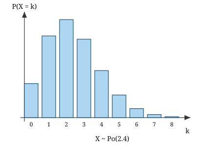

<script src="/assets/redirect.js"></script>
<section class="theory" data-section="S2-2.1">
<h2>2.1 Introduction to the Poisson distribution</h2>
<p class="src">Based on Cambridge International AS &amp; A Level Mathematics: Probability &amp; Statistics 2 Coursebook (Jayne Kranat), Chapter 2 The Poisson distribution, printed pp.27–32 (Key points 2.1–2.3, Worked examples 2.1–2.2, Exercise 2A). Own wording and new numbers. Adapting the mean to a different interval, the Poisson approximation to the binomial distribution, the normal approximation, and hypothesis tests are left to later subsections, as in the book.</p>
<p class="key-words"><strong>Key words:</strong> <em>Poisson distribution</em>, <em>Poisson parameter</em>, <em>mean</em>, <em>variance</em></p>
<p>Some counts record rare events that occur singly, at random and independently, in a fixed interval of time or space: for example typing errors on a page, or bubbles in a piece of glass. The possible values are the whole numbers \(0\), \(1\), \(2\), \(\ldots\), and large counts, far above the mean, are possible but unusual. A discrete model that fits this pattern is a <strong>Poisson distribution</strong>.</p>
<p>A Poisson distribution can be used when events occur singly, at random and independently, in a given interval, and when the mean and variance of the data are approximately equal. The distribution has a single <strong>Poisson parameter</strong>, denoted \(\lambda\), which is both the mean and the variance. We write \(X\sim\mathrm{Po}(\lambda)\). Then \(\mathrm{E}(X)=\lambda\), \(\mathrm{Var}(X)=\lambda\), and</p>
<p>\[\mathrm{P}(X=r)=\mathrm{e}^{-\lambda}\dfrac{\lambda^r}{r!},\qquad r=0,1,2,\ldots.\]</p>
<p>When modelling data we use the mean, rather than the variance, as the value of \(\lambda\), and we then compare expected frequencies with the observed frequencies. The constant \(\mathrm{e}\) is approximately \(2.7183\) to 4 decimal places; a calculator will evaluate powers of \(\mathrm{e}\) directly.</p>
<p>For example, if \(X\sim\mathrm{Po}(2.4)\), then \(\mathrm{E}(X)=2.4\), \(\mathrm{Var}(X)=2.4\), and \(\mathrm{P}(X=0)=\mathrm{e}^{-2.4}=0.0907\) to 3 significant figures. The probabilities rise to a peak near the mean and then decrease.</p>
<p></p>
<script src="../../assets/widget-kinds-pkg12.js"></script>
<div class="ms-widget" data-widget="poisson"><p class="ms-widget-fallback">Interactive figure: a bar chart of Poisson probabilities P(X = x) as λ changes.</p></div>

<div class="worked-example">
<h4>Worked example 1: The mean and variance</h4>
<p class="src">Book: Key point 2.3 and the clinic discussion on pp.28–30; new parameter</p>
<p>The number of faults \(X\) on a randomly chosen metre of cable is modelled by \(X\sim\mathrm{Po}(2.4)\). Write down the mean and the variance of \(X\), and find \(\mathrm{P}(X=0)\) correct to 3 significant figures.</p>
<ol class="steps">
<li>For a Poisson distribution the mean and the variance both equal the Poisson parameter, so \(\mathrm{E}(X)=2.4\) and \(\mathrm{Var}(X)=2.4\). <span class="mark">B1</span></li>
<li>\(\mathrm{P}(X=0)=\mathrm{e}^{-2.4}=0.0907\) to 3 significant figures. <span class="mark">M1 A1</span></li>
</ol>
<p class="final"><strong>Answer:</strong> Mean \(2.4\), variance \(2.4\), and \(\mathrm{P}(X=0)=0.0907\) to 3 significant figures.</p>
</div>
<div class="worked-example">
<h4>Worked example 2: A ratio that recovers the parameter</h4>
<p class="src">Book: the formula on p.28; new use of the ratio \(\mathrm{P}(X=1)/\mathrm{P}(X=0)\)</p>
<p>A Poisson random variable \(X\) satisfies \(\mathrm{P}(X=1)=2.4\,\mathrm{P}(X=0)\). Find the Poisson parameter.</p>
<ol class="steps">
<li>\(\mathrm{P}(X=0)=\mathrm{e}^{-\lambda}\) and \(\mathrm{P}(X=1)=\mathrm{e}^{-\lambda}\lambda\), so the given ratio is \(\lambda=2.4\). <span class="mark">M1 A1</span></li>
</ol>
<p class="final"><strong>Answer:</strong> \(2.4\)</p>
</div>
<h3>Quick check</h3>
<div class="quick-check" data-q="QC1">
<p>The random variable \(X\) has the distribution \(\mathrm{Po}(3.6)\). Write down \(\mathrm{E}(X)\).</p>
<p class="final"><strong>Answer:</strong> \(3.6\)</p>
</div>
<div class="quick-check" data-q="QC2">
<p>The random variable \(X\) has the distribution \(\mathrm{Po}(3.6)\). Write down \(\mathrm{Var}(X)\).</p>
<p class="final"><strong>Answer:</strong> \(3.6\)</p>
</div>
<div class="quick-check" data-q="QC3">
<p>A Poisson random variable \(X\) satisfies \(\mathrm{P}(X=1)=3.6\,\mathrm{P}(X=0)\). What is the Poisson parameter?</p>
<p class="final"><strong>Answer:</strong> \(3.6\)</p>
</div>
</section>
